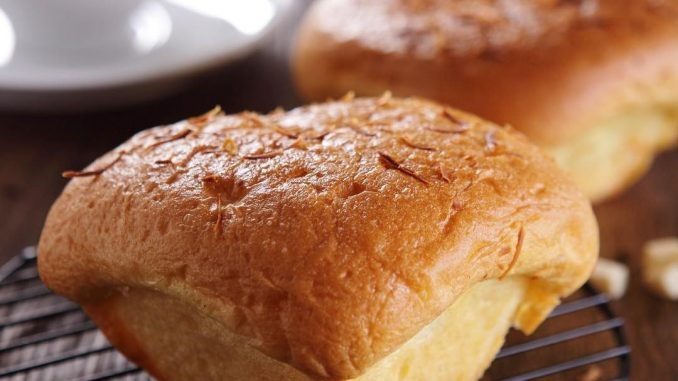
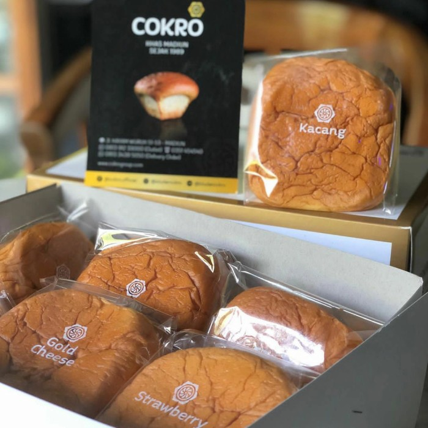
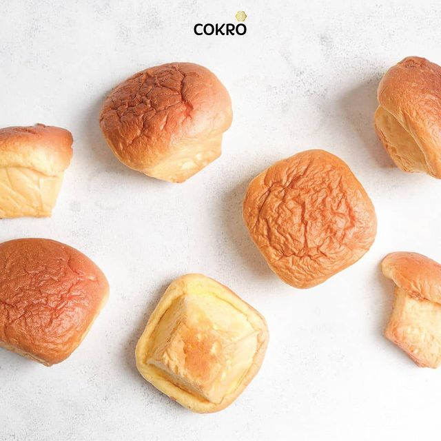

Bluder Cokro Madiun
Sejak dulu kota Madiun sangat terkenal dengan kuliner dan oleh-oleh khasnya berupa
brem, bumbu pecel, madu mongso dan lempeng. Namun ada satu lagi kuliner khas baru yang lagi digemari
dan menjadi ikon baru-baru ini sebagai Oleh-oleh Khas Kota Madiun yaitu Roti Bluder Cokro. Roti
Bluder merupakan roti yang memiliki cita rasa khas kolonial Belanda tempo doeloe. Pabrik Roti Bluder
Cokro ini beralamat di Jalan Cokroaminoto 36 Madiun. Letaknya di depan Kantor Pegadaian Madiun.

Bluder Cokro
Bluder Cokro merupakan produk roti legendaris yang berasal dari Madiun, Jawa Timur.
Kelembutan dari roti Bluder Cokro memiliki tempat spesial tersendiri di hati masyarakat. Rasa
istimewa yang dipertahankan sejak dari dulu membuatnya tetap diburu khalayak ramai sampai saat
ini. Berdiri pada tahun 1989 di Jalan Cokroaminoto no 36 Madiun, Bluder Cokro tetap berproduksi
hingga saat kini dan terus berinovasi dengan menambah varian dan produk baru yang sesuai dengan
lidah masyarakat Indonesia.
Keiistimewaan Bluder Cokro
Bluder Cokro ini sudah berdiri sejak 19 Agustus 1889. Rasanya yang legit dan gurih,
serta kemasannya yang praktis, sangat cocok untuk oleh-oleh. Perlahan tapi pasti, kelezatan kue yang
diklaim tanpa bahan pengawet itu mulai dikenal luas. Perusahaan ini membuka sejumlah outlet diluar
kota. Di antaranya di Ngawi, Ponorogo, Caruban, Madiun, Magetan dan Surabaya. Kini penikmat Bluder
sudah merambah luar Jawa, antara lain Makasar dan Martapura. Untuk memudahkan cara membawanya,
kemasan di desain paper bag yang dilengkap alamat sehingga semakin membuat Bluder Cokro laris manis
dipasaran.

Bluder Cokro
Roti Bluder adalah nama roti yang terbuat dari perpaduan adonan roti dan adonan cake
yang menghasilkan roti dengan ciri khas bertekstur sangat lembut, empuk dan halus serta daging
rotinya berwarna agak kekuningan yang diperoleh dari pemakaian kuning telur yang relatif lebih
banyak dibandingkan dengan roti biasa. Selain itu, serat Roti Bluder ketika dirobek terlihat jelas.
Pada umumnya tekstur dalam dan luar Roti Bluder terlihat selalu basah, hal ini disebabkan oleh
pemakaian margarin pada bagian luar roti yang merasuk kedalam roti.

Bluder Cokro
Bahan utama dalam pembuatan roti jenis ini sangat sederhana yaitu tepung terigu,
ragi, telur, mentega dan gula. Namun kesederhanaannya lah yang membuat roti ini mampu memanjakan
lidah penggemar roti dan dapat ketagihan bila telah mencobanya sekali. Sederhana dalam arti tidak
banyak krim atau toping yang menghiasi Roti Bluder Cokro tersebut. Roti kuno resep warisan
peninggalan sejak jaman penjajahan Belanda yang diwariskan secara turun temurun melalui keluarga
pemilik Bluder Cokro ini memiliki tekstur yang sangat empuk dan rasanya yang beraneka ragam.